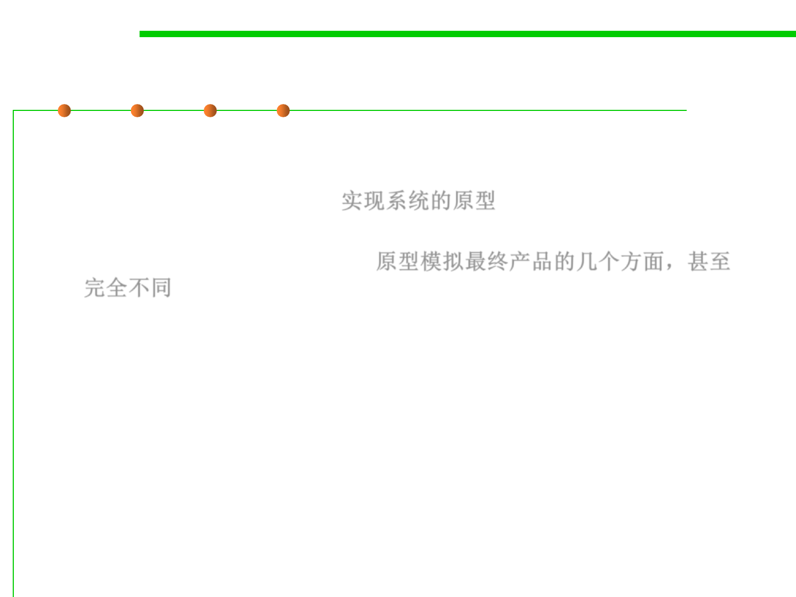

2.1 Software Lifecycle and Configuration Management
Prototyping (iterative) 原型法
▪ Software prototyping is the activity of creating prototypes of
software applications, i.e., incomplete versions of the software
program being developed. 实现系统的原型
– A prototype typically simulates a few aspects of, and may be completely
different from, the final product. 原型模拟最终产品的几个方面，甚至
完全不同
▪ Process:
– Identify basic requirements: determine basic requirements including the
input and output information desired. Details can typically be ignored.
– Develop initial prototype: The initial prototype is developed that includes
only user interfaces.
– Review: The customers, including end-users, examine the prototype and
provide feedback on additions or changes.
– Revise and enhance the prototype: Using the feedback both the
specifications and the prototype can be improved. If changes are
introduced then a repeat of steps #3 and #4 may be needed.